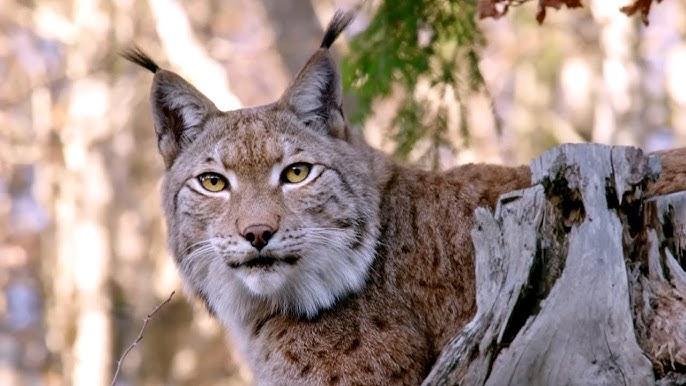
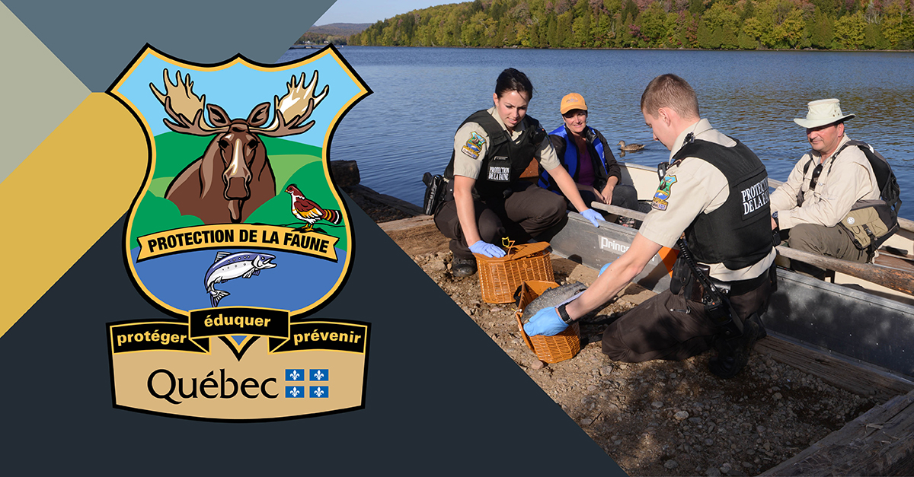

Un village plein d’histoires !

Découvrez l’histoire fascinante de ce village unique en son genre, niché au cœur de la forêt québécoise.
Obtenez un accès privilégié et illimité pour 20 $ par année.
Devenez membre !
Découvrez l’histoire fascinante de ce village unique en son genre, niché au cœur de la forêt québécoise.

Apprenez tout sur cet animal majestueux et incontournable de la faune du Québec.

Venez voir nos lynx et carcajous en liberté !
Venez vous promener librement au milieu des lynx, carcajous et ours bruns.
Voir nos activités familialesContribuez à l’essor de l’ours noir, participez à notre programme de survie solitaire et découvrez nos initiatives de protection du caribou.
